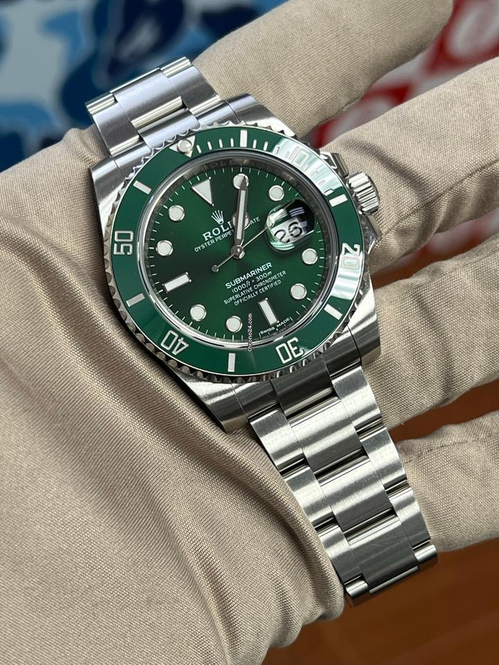

Often considered the most iconic dive watch ever made, the Submariner was introduced in 1953. It's known for its robust and functional design, including a rotatable bezel for tracking dive time.
 Rolex Submariner is a legendary and iconic dive watch that has transcended its original purpose as a professional tool to become a global symbol of luxury, precision, and durability. Since its introduction in 1953, it has set the standard for what a dive watch should be, and its design has been widely emulated.The dial features large, simple-shaped hour markers (triangles, circles, rectangles) and broad "Mercedes-style" hands. These elements are coated with Rolex's proprietary Chromalight material, which provides a long-lasting blue luminescence for exceptional legibility in low-light conditions.